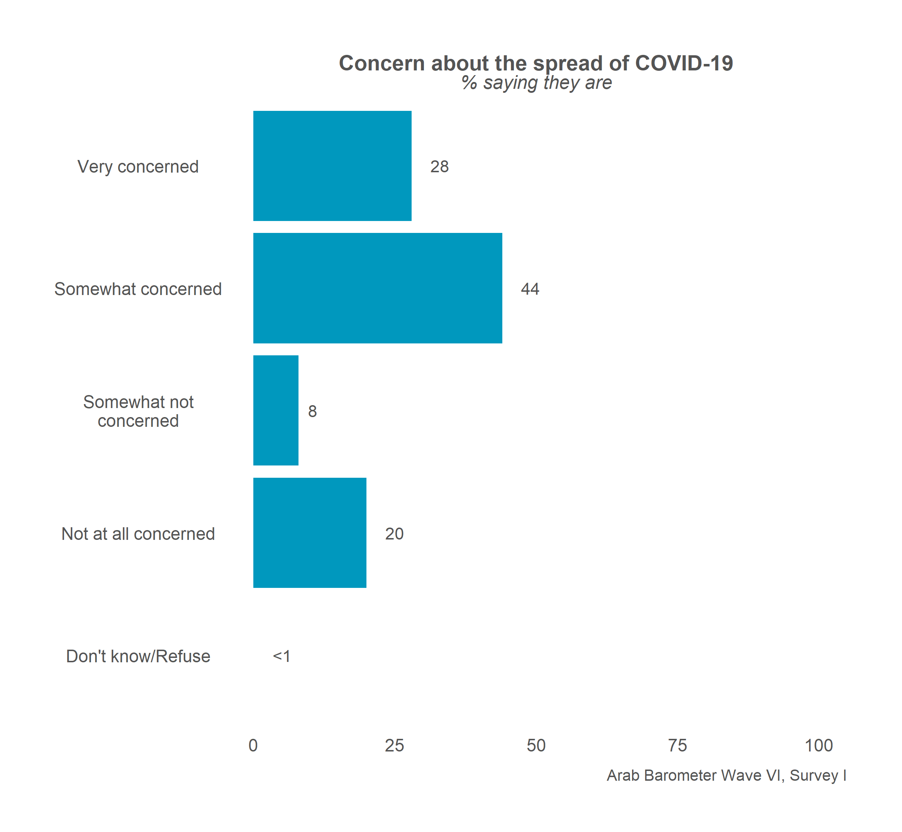
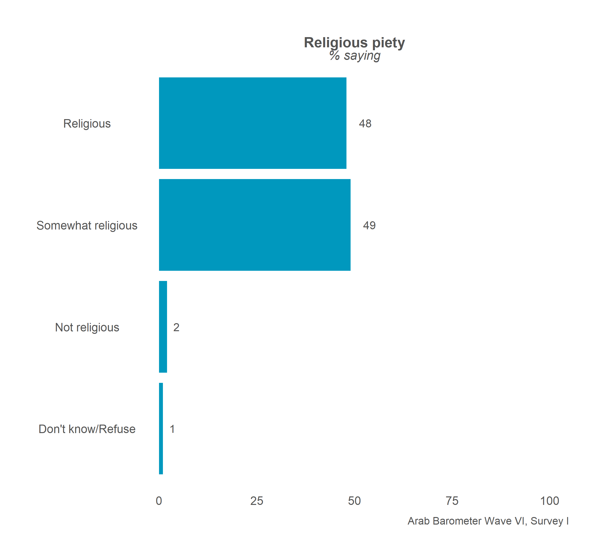
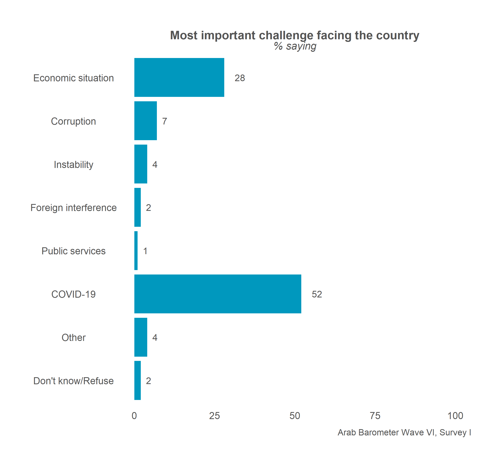

Chapter 2 Single Country Overall Graphs
This chapter will cover how to make an overall frequency graph for a single country.
2.1 Create a Single Graph
This section will go over how to make a one-off frequency graph for a single country.
At the end, your code will look like the following:
survey1 %>%
calculate_smry_individual("Q1COVID19",
"Algeria") %>%
plot_smry_individual(.caption = "Arab Barometer Wave VI, Survey I, Algeria")That code will produce the following graph:

Let’s go!
2.1.1 Create a Summary
The first step in creating a plot is to gather the data you want to display and organize it. You do this with the create_smry_individual() function.
The three main parameters you need to provide to this function are (1) the data you are using, (2) the variable you want to plot, and (3) the country you want to plot it for. To see all the input parameters for the function, type the code ?calculate_smry_individual in your R console.
In this example, the variable we want to plot is Q1COVID19 and the country we want to plot it for is Algeria.
calculate_smry_individual(
.ab = survey1, # The data you are using
.var = "Q1COVID19", # The variable you want to plot
.country = "Algeria" # The country you want to plot it for
)The above is the same as:
calculate_smry_individual(survey1,"Q1COVID19","Algeria")Which is the same as:
survey1 %>%
calculate_smry_individual("Q1COVID19",
"Algeria")The last example uses a pipe, %>%, which comes from the package dplyr, which is automatically loaded by ArabBarometR. To learn more about piping and using %>% in programming, see A Note on Piping in the larger ArabBarometR guide.
The output of any of the above expressions is the same:
## # A tibble: 5 × 2
## Q1COVID19 Percent
## <dbl+lbl> <dbl>
## 1 1 [Very concerned] 28
## 2 2 [Somewhat concerned] 44
## 3 3 [Somewhat not concerned] 8
## 4 4 [Not at all concerned] 20
## 5 666 [Don't know/Refuse] 0This data frame is what we are ultimately graphing.
There are few things to note about the summary data frame we just created.
First, there are two columns. The first column is named for the question we are graphing. The second column is named Percent. If you want to use the plotting functions in ArabBarometR to graph a summary data frame that is not created by a calculate function (see complete list of calculate functions in the ArabBarometR Guide), the data frame must be structured as two columns with the second column named Percent.
Second, you can see that the first column is labeled. The labels come from the responses in the data. If the responses in the data are not labeled, this column will not be labeled. In the next step, plotting, the y-axis labels are taken from these labels. So, if the column is not labeled, the y-axis will just be the values of the column.
Let’s store the summary as an object and move on.
Q1COVID19_summary <- survey1 %>%
calculate_smry_individual("Q1COVID19",
"Algeria")2.1.2 Plot the Summary
The next step is plot the summary we just created. To do this, we use the function plot_smry_individual().
There is only one necessary parameter to use plot_smry_individual(): the summary data frame. For a complete list of acceptable parameters and documentation, you can run ?plot_smry_individual in your R console.
Now, we can plug our summary into the plot function:
plot_smry_individual(
.df = Q1COVID19_summary # The summary data frame
)The above code is the same as:
Q1COVID19_summary %>%
plot_smry_individual()Which is the SAME as:
survey1 %>%
calculate_smry_individual("Q1COVID19",
"Algeria") %>%
plot_smry_individual()We can do this because Q1COVID19_summary is equal to survey1 %>% calculate_smry_individual("Q1COVID19", "Algeria").
Any of the above code gives the following graph:
Almost done! Notice how the caption says Arab Barometer Wave N (DATE)? Let’s change that.
survey1 %>%
calculate_smry_individual("Q1COVID19",
"Algeria") %>%
plot_smry_individual(
.caption = "Arab Barometer Wave VI, Survey I, Algeria" # NEW caption
)Now we have the plot we started with! We’re done!
2.2 Create Many Graphs
As a rule of thumb in programming, if you can create something one time, you can create it a bajillion times. This is good because for each wave, Arab Barometer needs approximately a bajillion graphs.
To create many graphs at once, there are three steps to follow.
- First, identify the variables to plot.
- Second, create summaries of those variables.
- Third, plot those summaries.
At the end of this section, your code will look like the following:
#.....................Identify the variables.....................
variables_2_plot <- list("Q1COVID19",
"Q2061A",
"Q609")
names(variables_2_plot) <- c("Q1COVID19",
"Q2061A",
"Q609")
#......................Create the summaries......................
summaries <- survey1 %>%
calculate_smry_individual(variables_2_plot,
"Algeria")
#.......................Plot the summaries.......................
plots <- map(summaries,
plot_smry_individual,
.caption = "Arab Barometer Wave VI, Survey I")The result is a named list of plots. Each element in the list is a plot. The element is named for the variable it is a plot of.
For example, to see the plot for variable Q1COVID19, run the following code:
plots$Q1COVID19
To see the plot for variable Q2061A, run the following code:
plots$Q2061A
Finally, to see the plot for variable Q609, run the following code:
plots$Q609
That’s it! The only limit on the number of graphs you can create at once is the time it will take R to make them. The more graphs you try to create at once, the longer it will take.
Let’s begin.
2.2.1 Identify the Variables
When creating many graphs, you need to tell R which variables you want to make plots of. This is true for when you want to create a single graph as well, but it is much more strongly implied. Plus, the variables must be identified in a specific way.
To create many summaries at once, you need to provide your variables in a named list. To create a named list, first make a list of the variables you want to plot.
variables_2_plot <- list("Q1COVID19",
"Q2061A",
"Q609")The next step is to name your list.
names(variables_2_plot) <- c("Q1COVID19",
"Q2061A",
"Q609")Now, you have a named list of variables. Time to summarize them.
2.2.2 Create Summaries
The same function used to create a single summary is used to create many summaries: calculate_smry_individual(). Recall it takes three parameters: (1) the data you are using, (2) the variable(s) you want to plot, and (3) the country you are creating the plot for. Now, instead of one variable, you supply the list of variables.
calculate_smry_individual(
.ab = survey1, # The data you are using
.var = variables_2_plot, # The variables you want to plot
.country = "Algeria" # The country you want to plot it for
)The above is the same as:
calculate_smry_individual(survey1,variables_2_plot,"Algeria")Which is the same as:
survey1 %>%
calculate_smry_individual(variables_2_plot,
"Algeria")All of the above code in this section produces the same result: a named list. Each element in the list is a summary of a variable. The variable is the name of the list. In long form, it looks like the following:
## $Q1COVID19
## # A tibble: 5 × 2
## Q1COVID19 Percent
## <dbl+lbl> <dbl>
## 1 1 [Very concerned] 28
## 2 2 [Somewhat concerned] 44
## 3 3 [Somewhat not concerned] 8
## 4 4 [Not at all concerned] 20
## 5 666 [Don't know/Refuse] 0
##
## $Q2061A
## # A tibble: 8 × 2
## Q2061A Percent
## <dbl+lbl> <dbl>
## 1 1 [Economic situation] 28
## 2 2 [Corruption] 7
## 3 6 [Instability] 4
## 4 7 [Foreign interference] 2
## 5 12 [Public services] 1
## 6 15 [COVID-19] 52
## 7 16 [Other] 4
## 8 666 [Don't know/Refuse] 2
##
## $Q609
## # A tibble: 4 × 2
## Q609 Percent
## <dbl+lbl> <dbl>
## 1 1 [Religious] 48
## 2 2 [Somewhat religious] 49
## 3 3 [Not religious] 2
## 4 666 [Don't know/Refuse] 1Let’s save this outcome as an object and move on to plotting.
summaries <- survey1 %>%
calculate_smry_individual(variables_2_plot,
"Algeria")2.2.3 Plot the Summaries
Again, the same function to create one plot is used to create many plots: plot_smry_individual(). Unlike last time, a helper function is needed to create multiple plots.
The helper function is called map. The map function takes two inputs: (1) a list of things to pass to a function, and (2) a function. Essentially, map takes each item in the list, and passes it to the function very efficiently.
In this case, you supply the list of summaries you just created, and the plot_sumry_individual() function. The code follows:
map(
summaries, # List of summaries
plot_smry_individual # Plotting function
)The code produces the following output:
map(
summaries, # List of summaries
plot_smry_individual # Plotting function
)## $Q1COVID19##
## $Q2061A##
## $Q609


Notice, yet again, the caption needs to be changed. To change the caption for all the graphs, just add one line to the map function.
map(
summaries, # List of summaries
plot_smry_individual, # Plotting function
.caption = "Arab Barometer Wave VI, Survey I" # Caption
)## $Q1COVID19##
## $Q2061A##
## $Q609


Congratulations! You have created three plots at once. You can store them in as a single list and call them one at a time.
plots <- map(
summaries, # List of summaries
plot_smry_individual, # Plotting function
.caption = "Arab Barometer Wave VI, Survey I" # Caption
)Now, all three plots have been stored in a named list named plots. To look at the first plot:
plots$Q1COVID19
To see the plot for variable Q2061A, run the following code:
plots$Q2061A
Finally, to see the plot for variable Q609, run the following code:
plots$Q609
You have now completed all steps in the example code. Congrats!